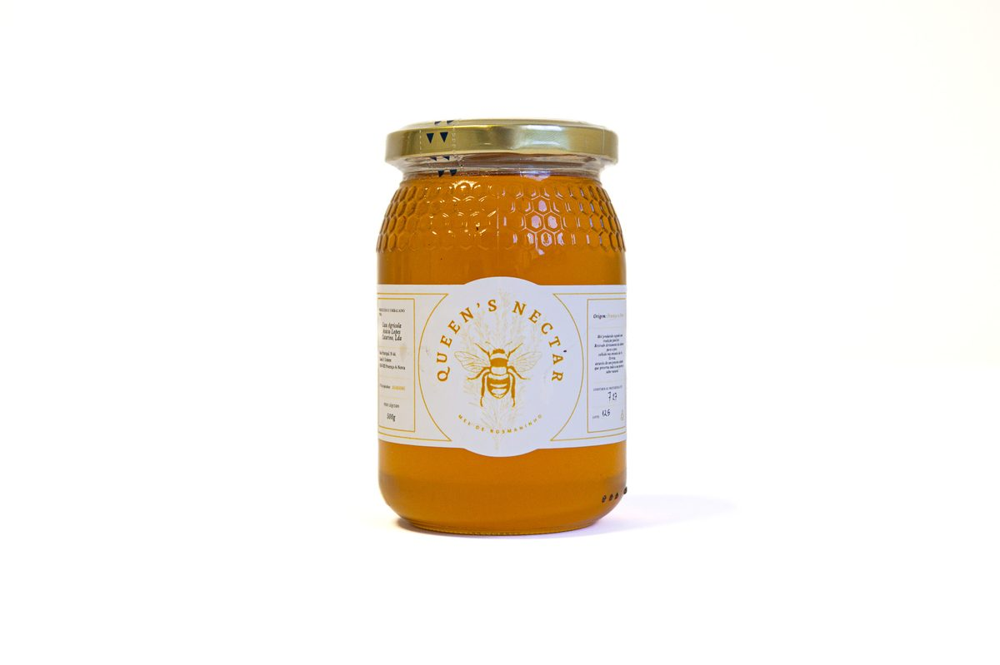
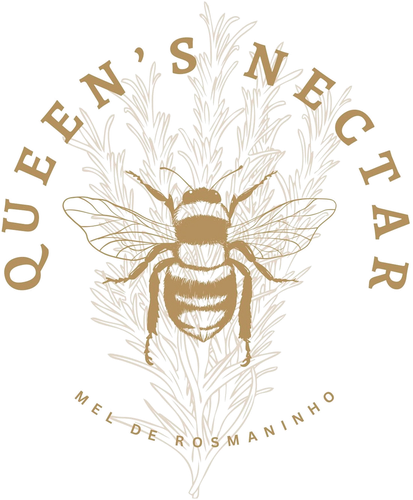
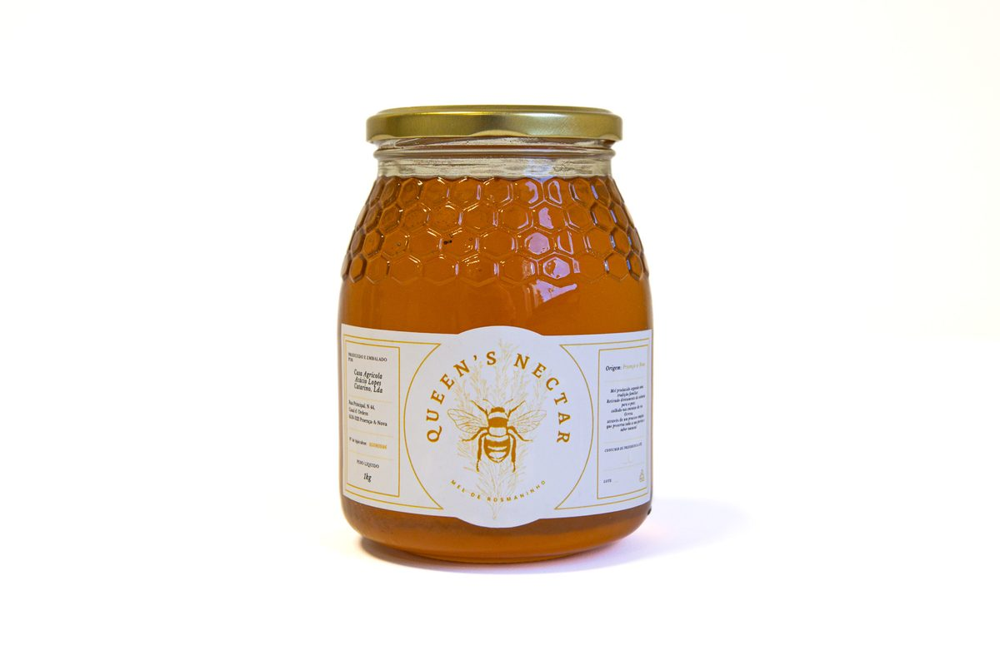

Mel de Rosmaninho
500 g
€7,90

Das encostas do Rio Ocreza para a sua mesa
Mel de rosmaninho puro, extraído a frio, sem aditivos.
Do favo para o frasco, sem atalhos.
Mel de rosmaninho colhido nas encostas do Ocreza

500 g
€7,90

Mais popular1 kg
€11,90

Nas margens do Rio Ocreza, entre olivais centenários e campos de rosmaninho selvagem, as nossas colmeias existem há gerações. Herdadas do nosso avô, continuam hoje no mesmo lugar, em São Pedro do Esteval, onde a natureza preserva tudo intacto.
O mel Queen's Nectar é extraído a frio, sem aquecimento e sem aditivos. O resultado é um mel de sabor floral intenso, que preserva todos os aromas e nutrientes naturais da flor de rosmaninho.
Saber mais